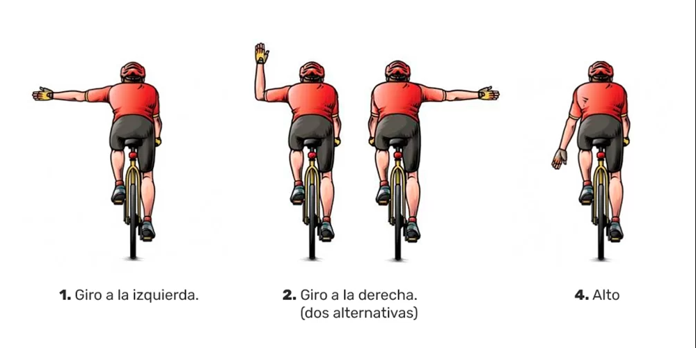
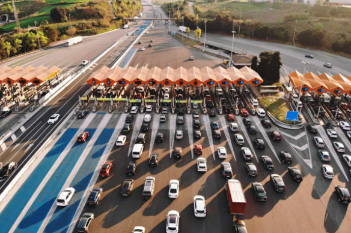
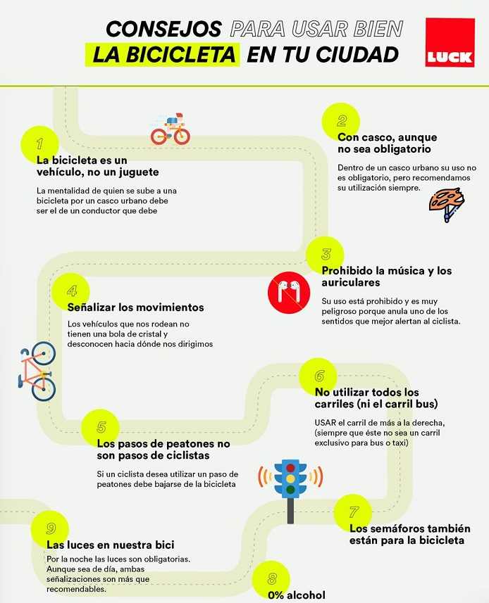
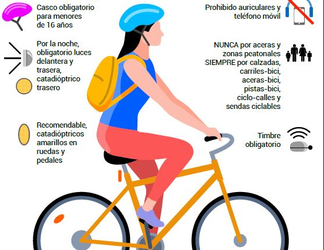

1. Circular atento a la vía y a los vehículos.
2. Respetar las normas de prioridad y los semáforos.
3. Señalizar los giros y los cambios de dirección con antelación.
4. Mantener siempre una conducción visible y previsible.

1. Circular atento a la vía y a los vehículos.
2. Respetar las normas de prioridad y los semáforos.
3. Señalizar los giros y los cambios de dirección con antelación.
4. Mantener siempre una conducción visible y previsible.

Hay que circular con precaución y respetar el resto de vehículos.
Máx. 45 km/h.
Hay que extremar la atención en zonas con peatones y cruces.
Velocidad entre 6 y 25 km/h.
No pueden circular por autopistas.
La bicicleta no alcanza la velocidad mínima permitida.
No pueden circular por la calzada principal.
Solo pueden ir por el arcén si está permitido y con mucha precaución.
Se permite circular por la autovias porque no tienen peajes.

Circular con precaución y máxima visibilidad.
Evitar maniobras bruscas y frenar con tiempo.
Mantener distancia de seguridad y avisar siempre los movimientos.

Respetar las señales, semáforos y prioridades.
Evitar circular por lugares donde no esté permitido.
Adaptar la velocidad a la vía y a la situación del tráfico.

Incumplir las normas de circulación puede conllevar sanción.
No respetar semáforos, señales o prioridades también puede ser penalizado.
Circular por vías prohibidas puede implicar multa.